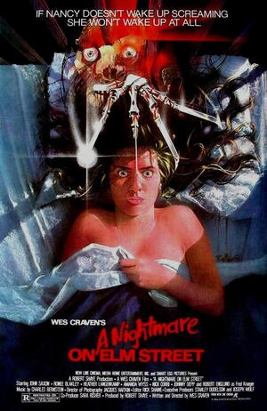

Pesadilla en Elm street

Desplegar info
Varios jóvenes de una pequeña localidad tienen habitualmente pesadillas en las que son perseguidos por un hombre deformado por el fuego y que usa un guante terminado en afiladas cuchillas. Algunos de ellos comienzan a ser asesinados mientras duermen por este ser que resulta ser Freddy Krugger, un hombre con un pasado abominable.
| Año | 1984 |
|---|---|
| Nacionalidad | EEUU |
| Director | Wes Craven |
| Actores principales | Heather Langerkam, Johnny Depp |